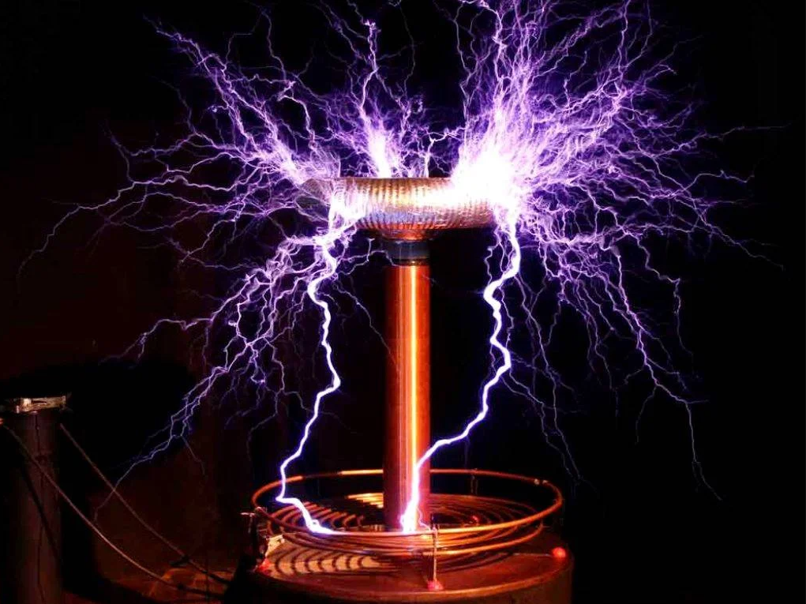

Una breve introducción
Nikola Tesla fue un inventor, ingeniero eléctrico y físico serbio-estadounidense que hizo importantes contribuciones en el campo de la electricidad y el electromagnetismo a finales del siglo XIX y principios del siglo XX. Es conocido por sus innovadores inventos y descubrimientos, muchos de los cuales se emplean en la vida cotidiana en la actualidad.
Entre los inventos más destacados de Tesla se encuentran la corriente alterna, que revolucionó la distribución de energía eléctrica en todo el mundo y se usa en la mayoría de los hogares y empresas hoy en día. También inventó el motor de inducción, que es empleado en muchos electrodomésticos, y la bobina Tesla, que sigue siendo objeto de interés en la actualidad por su capacidad para generar descargas eléctricas de alta frecuencia.
Además, Tesla también trabajó en la transmisión inalámbrica de energía eléctrica y la radio, y es considerado uno de los pioneros en el campo de la robótica. Sus innovadores inventos y descubrimientos han tenido un impacto duradero en el mundo moderno y lo convierten en uno de los inventores más influyentes de la historia.
A continuación veremos algunos inventos más a detalle
Corriente alterna
La corriente alterna fue desarrollada por varios inventores y científicos, pero es Nikola Tesla quien se considera el principal creador y defensor de esta tecnología. A finales del siglo XIX, Tesla trabajaba para la compañía eléctrica de Thomas Edison, quien en ese momento promovía la corriente continua como la mejor forma de distribución de energía eléctrica. Sin embargo, Tesla creía que la corriente alterna era superior debido a su capacidad para transmitir la energía eléctrica a largas distancias y a su facilidad de transformación de voltaje. Tesla diseñó un sistema de generación, transmisión y distribución de corriente alterna que revolucionó la industria eléctrica y permitió el uso de energía eléctrica a gran escala.
La corriente alterna (AC, por sus siglas en inglés) es un tipo de corriente eléctrica en la que la dirección del flujo de electrones cambia de manera periódica. Esto significa que la polaridad de la corriente se invierte a intervalos regulares, generando un patrón de onda sinusoidal.
El funcionamiento básico de la corriente alterna se basa en el uso de un generador eléctrico que produce una señal de corriente alterna. Esta señal se transmite a través de líneas de transmisión y se distribuye a los hogares y negocios mediante transformadores que cambian el voltaje a niveles más seguros y manejables. La corriente alterna se emplea para alimentar una amplia variedad de dispositivos eléctricos, desde electrodomésticos hasta motores eléctricos y sistemas de iluminación.
Bobina de Tesla
La bobina Tesla fue inventada por Nikola Tesla en 1891. La bobina Tesla es un transformador resonante que se utiliza para producir voltajes extremadamente altos y descargas eléctricas de alta frecuencia. La bobina consta de un núcleo de hierro rodeado por dos bobinas, una primaria y una secundaria, que están separadas por una capa de aire o aislante.
La bobina Tesla es conocida por su capacidad para generar impresionantes descargas eléctricas de alta frecuencia, lo que la ha convertido en un objeto popular en la comunidad de entusiastas de la electricidad y la electrónica. Además, la bobina Tesla ha sido empleada en diversas aplicaciones, incluyendo la investigación científica, la medicina y el entretenimiento.
Tambien ha sido objeto de estudio y experimentación por parte de muchos investigadores, entusiastas y artistas. Se ha utilizado para crear espectaculares efectos visuales y sonoros en espectáculos de entretenimiento, así como en experimentos científicos y médicos. Además, ha sido utilizada en investigaciones relacionadas con la electricidad y la física, así como en estudios de fenómenos atmosféricos como los rayos y las auroras boreales. La bobina Tesla sigue siendo un objeto de interés y estudio en la actualidad, y su legado ha dejado una huella duradera en la historia de la electricidad y la electrónica.
Algunos inventos más
Nikola Tesla es conocido por sus muchas contribuciones a la ciencia y la tecnología, y algunos de sus otros inventos destacados incluyen:
1. La lámpara de Tesla: un tipo de lámpara de gas de alta frecuencia que produce luz sin necesidad de un filamento.
2. El control remoto: Tesla creó un dispositivo que permitía controlar objetos a distancia mediante ondas de radio, lo que se considera uno de los primeros controles remotos.
3. El rayo de la muerte: aunque nunca llegó a completar este proyecto, Tesla diseñó un arma de energía dirigida que se cree que habría sido capaz de generar un rayo de alta energía capaz de destruir objetos a larga distancia.
4. El motor de turbina: Tesla desarrolló una turbina que utilizaba aire comprimido para producir energía eléctrica, una tecnología que todavía se utiliza en la actualidad.
Estos son solo algunos de los muchos inventos y descubrimientos de Nikola Tesla, que lo convierten en una figura influyente en la historia de la ciencia y la tecnología.